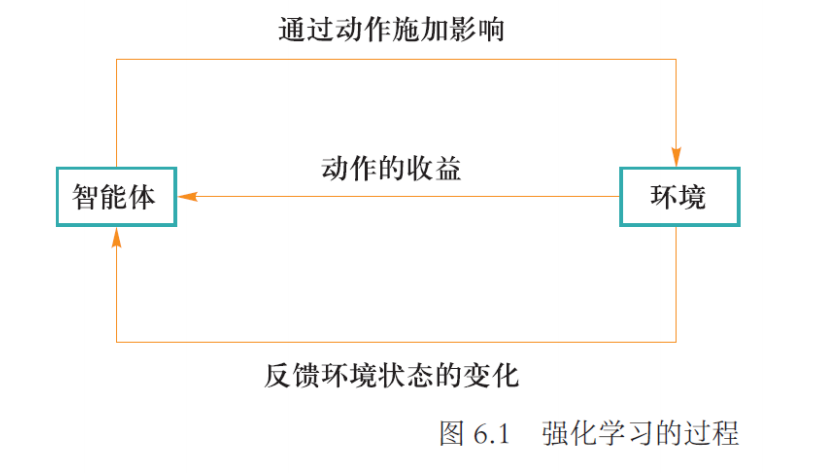

# 强化学习
根据环境所提供的奖罚反馈来学习所处状态可施加的最佳行动，在 “探索（未知空间）- 利用（已有经验）（exploration vs. exploitation）” 之间寻找平衡，完成某个序列化任务，具备自我学习能力
- 智能体（agent）：智能体是强化学习算法的主体，它能够根据经验做出主观判断并执行动作，是整个智能系统的核心。
- 环境（environment）：智能体以外的一切统称为环境，环境在与智能体的交互中，能被智能体所采取的动作影响，同时环境也能向智能体反馈状态和奖励。虽说智能体以外的一切都可视为环境，但在设计算法时常常会排除不相关的因素建立一个理想的环境模型来对算法功能进行模拟。
- 状态（state）：状态可以理解为智能体对环境的一种理解和编码，通常包含了对智能体所采取决策产生影响的信息。
- 动作（action）：动作是智能体对环境产生影响的方式，这里说的动作常常指概念上的动作，如果是在设计机器人时还需考虑动作的执行机构。
- 策略（policy）：策略是智能体在所处状态下去执行某个动作的依据，即给定一个状态，智能体可根据一个策略来选择应该采取的动作。
- 奖励（reward）：奖励是智能体序贯式采取一系列动作后从环境获得的收益。注意奖励概念是现实中奖励和惩罚的统合，一般用正值来代表实际奖励，用负值来代表实际惩罚。

强化学习的特点
- 基于评估：强化学习利用环境评估当前策略，以此为依据进行优化
- 交互性：强化学习的数据在与环境的交互中产生
- 序列决策过程：智能主体在与环境的交互中需要作出一系列的决策，这些决策往往是前后关联的
# 离散马尔可夫过程（Discrete Markov Process）
满足马尔可夫性的离散随机过程
用数学归纳法，推出 t+1 时刻状态仅与 t 时刻状态有关（一阶马尔可夫链）
强化学习是一种机器学习方法，通过与环境的交互来学习最优策略。下面我将通过具体的例子来解释这些公式和概念。
# 马尔可夫奖励过程
这个公式表示从时间步 t 开始的累积回报 ，其中 是在时间步 获得的即时奖励， 是折扣因子（范围在 [0, 1] 之间），用于减少未来奖励对当前决策的影响。
例：假在一个迷宫中寻找宝藏，每走一步都有可能获得或失去一些分数（奖励）。如果你在第 1 步获得 10 分，在第 2 步获得 5 分，在第 3 步获得 2 分，且折扣因子 ，那么从第 0 步开始的累积回报 就是：
强化学习的求解方法：
- 基于价值（1. 策略优化 2. 策略评估）
- 基于策略
- 基于模型
# 策略学习
价值函数 (value function):
在状态 s 下，按照策略 行动后在未来所获得的回报的期望值。
动作 - 价值函数 (action-value function):
在状态 s 下采取动作 a，按照策略 $\pi 行动后在未来获得的回报值。
例：继续迷宫的例子，假设在某个位置（状态 s 有两个选择：向左走（动作 或向右走（动作 ）。根据历史数据，向左走的平均回报是 8 分，向右走的平均回报是 12 分。那么在这个状态下，动作 - 价值函数 ，。
# 贝尔曼方程
价值函数的贝尔曼方程:
在状态 s 下，采取各个动作的概率加权平均的动作 - 价值函数。
动作 - 价值函数的贝尔曼方程:
在状态 s 采取动作 a 的概率 *（采取 a 进入 s’得到的回报 + 处于 s’可以得到的回报）。
# 策略评估算法步骤
# 动态规划
- 初始化 函数：首先需要对所有状态 s 的价值函数 进行初始化，通常可以设置为 0 或者任意合理的初始值。
- 循环迭代：
- 对于每一个状态 ，根据当前的策略 和已知的状态转移概率 ，以及即时奖励 ，更新该状态的价值函数 。
- 更新公式如下：
- 直到收敛：重复上述迭代过程，直到价值函数 在所有状态上都几乎不再发生变化，即达到收敛状态。这表明我们已经找到了在当前策略 下各个状态的稳定价值。
当前状态的价值是由后续状态的价值通过贝尔曼方程传播回来的
策略评估：动态规划、蒙特卡洛采样、时序差分
# 蒙特卡洛采样
通过随机采样来估计期望值
- 选择起始状态：从状态空间 S 中选择不同的起始状态。
- 按照当前策略采样轨迹：从每个起始状态出发，按照当前策略 生成若干条完整的轨迹（episode）。这些轨迹构成了集合 D。
- 计算反馈：对于每条轨迹中的每个状态 s，记录该状态出现时对应的回报 。
- 平均回报：对所有轨迹中状态 s 出现时的回报进行平均，得到该状态的价值 。
假设我们有 k 条轨迹，每条轨迹中状态 s 出现时对应的回报分别为，那么该状态的价值 可以通过以下公式计算：
# 时序差分 (TD)
时序差分算法通过在每个时间步 t 上更新状态价值函数 ，而不是在每个状态 上进行批量更新。
其中：
- 是学习率，通常取较小的值，如 0.1。
- 是即时奖励
- 是状态 的价值函数
- 是折扣因子，通常取较小的值，如 0.9。